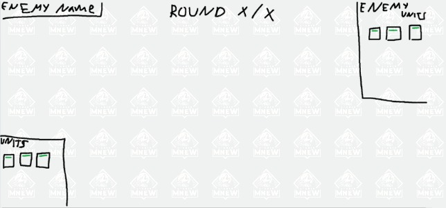
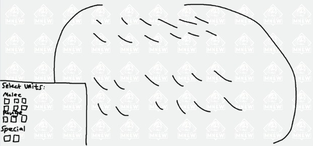
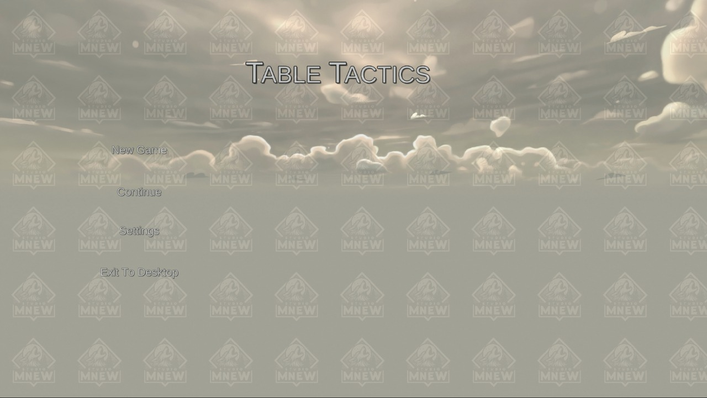
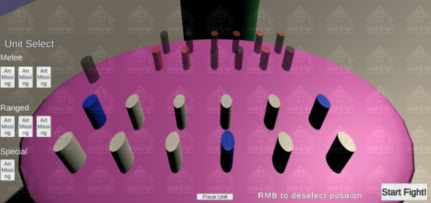

Table Tactics!
Here is another one of my passion-projects in progress I'm working on in my spare time!
The idea for this game is sort of difficult to describe, but essentially the idea of the game is for the player to strategize and field their units correctly in order to beat the enemies units.
Here is my initial idea for the game board. It will be a 4x6, with the board spaces being split into half of the enemies units and half of the players units.
I then went ahead and began to plan the UI elements that the game would have. Starting with the UI that would accompany the game board.
I was planning to have health bars, with little pictures for each unit that was currently on the field, so give the player all the current information of the battlefield. Before the fight starts, the player needs to pick units, so I designed that interface as well.
Now that I had these sketches done, It was time to think about the campaign screen, as players would always arrive there before or after an encounter.

My idea was to have some large pictures with a difficulty rating, a picture of the enemy for themeing, and their name. I also wanted some text to let the player know they could back out to the menu if needed.
I was eager to jump in, so I chose a game engine I am very familiar with.... which was Unity.
The beginning of design!
I eagerly opened up a fresh Unity3D project, and got to work!
Here's the game board! The red and blue pegs represent the places the player can select to spawn units.
Of course I needed the UI to accompany this scene, so I went ahead and made that too! At this point it was very basic, but it was a good start.

It was at this point I also began to work on allowing the player to select UI elements and places to spawn units. When the player chooses a spot, it's color changes to blue. If they hover a spot with their mouse, it turns green. Lastly, any UI element that is selected turns a gold-hue.
Getting back on track, I went ahead and made a fast mock-up of my Menu screen. I plan to have a fight-in-progress going on with fancy camera angles eventually, but for now a simple background will do.
I'm not an artist, but I'm happy with this simple mock-up for now! Time for the campaign screen design! I'm really not focusing on the art at the beginning of the project, so this one is a placeholder as well.
Each one of the cards will be a different enemy the player must fight in succession, with multiple rounds of fighting to each of them. For now, the 'Choose' button brings you straight into the first fight.
After fixing a pesky bug that allowed players to select multiple spots to spawn units at once, I then worked on Instantiation of units at those selected spots.
For clarity, I changed the spots to spawn units at to white, and the temoorary unit that gets spawned to blue. Here's what that looked like:
You can see I played with UI a bit, as I moved the 'start fight' button to the right side of the screen and added a 'place unit' button as well. The player also needs to deselect a position if they change their mind, so I added that feature as well with a right click of the mouse. The three blue units were prefabs that got spawned upon clicking the spawn unit button.
After clicking the 'start fight' button, the simulation begins and at this time only our 3 units go attack the other enemy units that are darker color.

I was happy with what I had so far, I just wanted to make some tweaks to colors and improve visibility for the player selecting positions to spawn their units. I also made some lighting changes and began to work on a better AI with actual animations.
My first idea for a weak melee unit was a little bunny rabbit with a sword. Ideally, he should be very annyoing and hop around all the time to try to stay out of enemies attack ranges, but be super squishy/low health. So that's what I did my best to create.
My first unit!
The AI will decide whether to strafe at random times, or move in close for an attack! It will always prioritize whatever enemy is closest to it.
I fixed my lighting bug that was occuring, and added some texture to the background/floor and to the tabletop.

As you can see, the visibility of units, spaces, and overall look of things drastically improved.
The next thing I had to do, was start to work on an enemy AI for my first unit and future units to fight. For now I adapted the bunny rabbit code, and made it work for enemy units as well.
Bunny fight!
Another one!
I have some small animation bugs, and the bunny only uses one attack, but now the units at least fight, and even have death animations! The bunny warpath begins!

Now that I had an enemy to fight, I am beginning to design and add more units to fight against or play on your side.
I added a slime girl who can perform basic attacks, but cannot strafe. I also added a harpy, who can strafe and has quite a long attack range.
Here is a sample of some of these units fighting:
I want something that is good to look at in the background while all the action is happening, so I'm experimenting with different terrains!
Here is some more action with even more characters!
I plan to add some juicy feedback for the player, such as damage popups and of course audio so the player really feels the combat!
That's all for now! But development continues! Thanks for checking out Table Tactics!